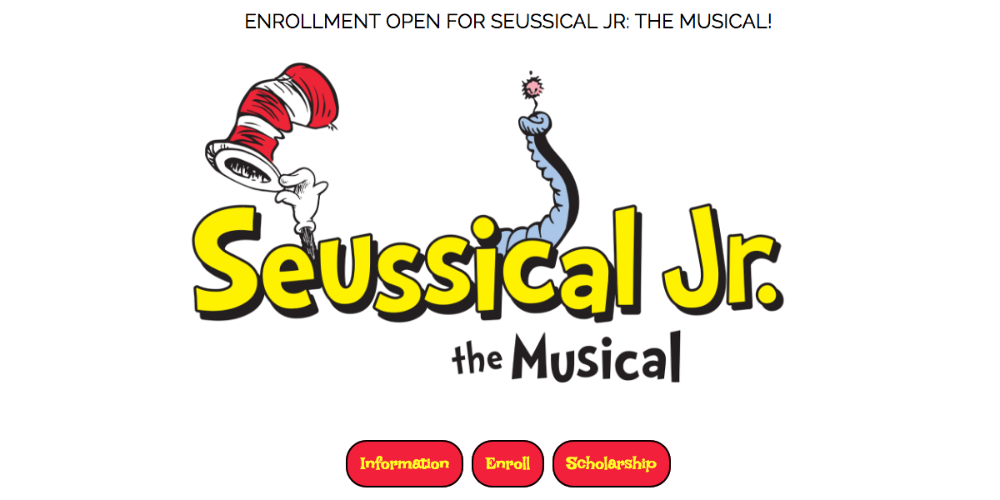

<section>
  

  <div id="modal1" class="modal modal-fixed-footer" materialize="modal" [materializeParams]="[{dismissible: true, opacity: .2}]" [materializeActions]="modalActions">
    <div class="modal-content">
      <h4>Seussical, The Musical!</h4>
      <h6>Built using: Angular, TypeScript, PostgreSQL, Knex.js, Express.js, Heroku, Firebase, CSS, HTML</h6>
      <div class="divider"></div>
      <p>This is a full-stack app that was built for Aurora, CO's
        <a href="http://www.vintagetheatre.com/">Vintage Theatre</a>, one of the largest non-profit live theatres in Colorado.
      </p>
      <p>
        Vintage required a means of tracking the registry for their Youth Program's summer camp, which accepts both paid enrollees
        as well as scholarship students.
      </p>
      <p>
        Using PostgreSQL, Knex.js, and Express.js, I built an API that would offer persisting registration data on enrollees and
        record whether they are paid students or scholarship recipients.
      </p>
      <p>
        On the frontend, I built a single page application with Angular that offers all relevant program information, as well as
        relevant forms for paid vs. scholarship. It also has an "Admin" section that allows administrators to track enrollment
        in all forms.
      </p>
      <p>
        Still needed: I hope to soon integrate Stripe to capture payments as well as a feature like OAuth that will allow for administrators
        to log in and access the "Admin" section (and, of course, to keep the general public from accessing it!)
      </p>
    </div>
    <div class="modal-footer">
      <a class="modal-action modal-close waves-effect waves-green btn-flat" 
        href="https://vypproject3.firebaseapp.com/">View Live</a>
      <a class="modal-action modal-close waves-effect waves-green btn-flat" 
        href="https://github.com/cchooley/project-3-vyp/">GitHub</a>
      <a class="waves-effect waves-green btn-flat" (click)="closeModal()">Close</a>
    </div>
  </div>
</section>